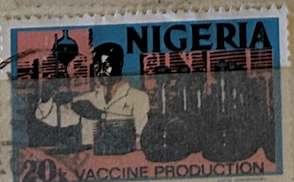
| SOURCE | TITLE| IMAGE MATCH | click to source page |
| groseducationalmedia.ca | Memories of Nigeria 1979-1981 | |
| We must relate to our past, document it, analyze it, and adapt it with much profit for the benefit of the present and the future generations. Our land and peoples, their myths, | 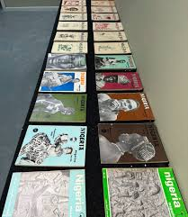 | |
| opensourceguinea.org | opensourceguinea.org: Peter Enahoro. How to be a Nigerian 1966. | |
| New Internationalist | Sapping Nigeria's Poor | New Internationalist | 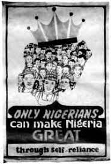 |
| WorthPoint | NIGERIA: Quarterly Magazine 1939 / Culture / Africa / Tribes / Carpentry / 1940. | #1778825906 | 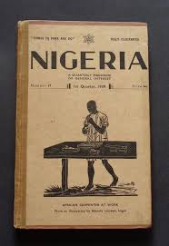 |
| Blogger.com | Nigerian Stamps and Postal History | 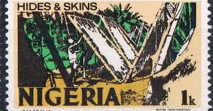 |
| beats-onit.com | Disregard Agitation For Disintegration, NGE Tells Nigerians - Beats-onit | 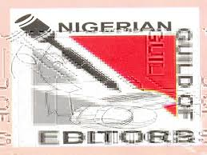 |
| Discogs | Nigeria 70 (The Definitive Story of 1970's Funky Lagos) – 3 x CD (slipcase, Compilation), 2001 [r578408] | Discogs | |
| Archive | Nigeria : dancing on the brink : Campbell, John, 1944- : Free Download, Borrow, and Streaming : Internet Archive | 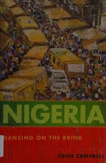 |
| Academia.edu | David Bellama - Independent Researcher | 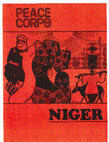 |
| Etsy | Nigeria Fishing Poster: Vintage Pan African Travel Art Print - Etsy Israel | 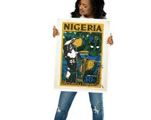 |
| Nomad4Now | Nigeria | Nomad4Now | Page 2 | 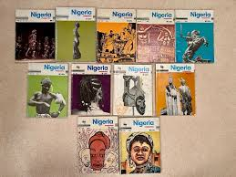 |
| Justseeds | 226: Small Press Africa, part II - Justseeds | |
| groseducationalmedia.ca | Nigeria | 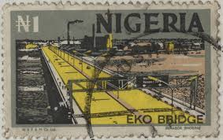 |
| Substack | The Life & Times of Jendella | Substack | 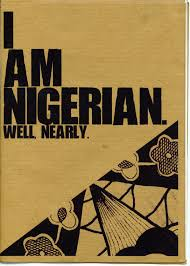 |
| YouTube | Sahara All Stars Of Jos-Take Your Soul - YouTube | |
| Etsy | Nigeria Fishing Poster: Vintage Pan African Travel Art Print - Etsy |  |
| TIGweb.org | Three Tribe of Nigeria - Global Gallery - TakingITGlobal | 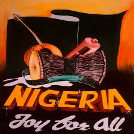 |
| Tumblr | 1959 Nigeria magazine cover More Vintage Nigerian photos – @nigerianostalgia on Tumblr |  |
| Academia.edu | University of Lagos | Department of Educational Foundations - Academia.edu | 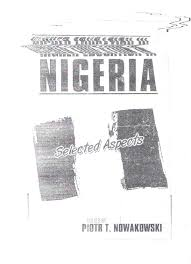 |
| ATQ News | CRIMMD Museum Archives | ATQ News | 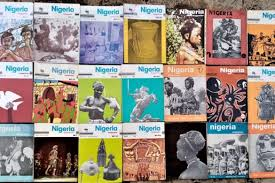 |
| Blogger.com | The 1973-1986 Definitive Issue |  |
| What are some tips for creating a 48' by 48' mix media painting? | ||
| Last.fm | Tire Loma Da Nigbehin — Monomono | Last.fm | |
| nigerianstamps.com | Independent Nigeria Stamps Gallery 1976 to 1980 - Nigerian Stamps | 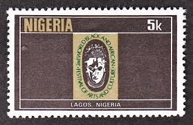 |
| Discogs | Nigeria 70 (Lagos Jump: Original Heavyweight Afrobeat, Highlife & Afro-Funk) – CD (Compilation, Reissue), 2013 [r8915548] | Discogs | |
| Powers of darkness An advert placed by the then Electricity Corporation of Nigeria in Nigeria Yearbook 1971. ECN was later renamed National Electric Power Authority (NEPA), then Power Holding Company of Nigeria ( | ||
| X | fashion&cultureweek (@phfashionexpo) / Posts / X | |
| Amazon.com | Amazon.com: NIGERIA: a different look: Perceptions of An Elephant in the Room eBook : Yerokun, Àlàmú, Yerokun, Oluwatobi: Books | |
| aloradunque.org | CATHOLIC DIOCESE OF ORLU |  |
| Nigeria Business Directory | IDEA Nigeria - Lagos - Contact Number, Email Address | 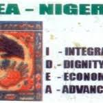 |
| NOWNESS | Black Star: Rebirth Is Necessary | NOWNESS |  |
| jandrstamps.com | Popes on stamps | JandR Stamps | 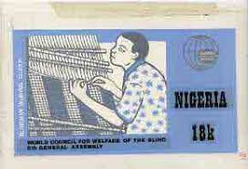 |
| Idea Nigeria - Idea Nigeria added a new photo. | 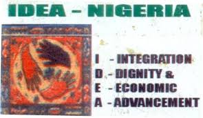 | |
| Nomad4Now | Nigeria Magazine 1937-1989 | Nomad4Now | 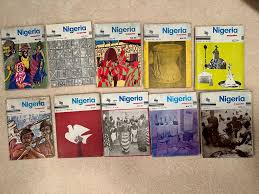 |
| Medium | Cleveland Museum of Art – Medium | 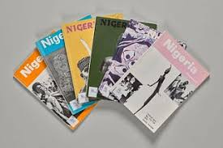 |
| TikTok | Explore Essential Historical Books on Nigeria's Legacy | TikTok | 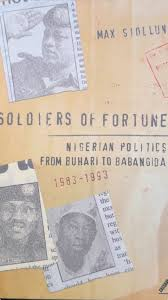 |
| TouchStamps | Stamp: Slave chain (Nigeria 2010) - TouchStamps | 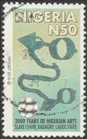 |
| eBay | Vintage Postage Stamp Nigeria Lagos 12X16 Inch Framed Art Print | eBay | 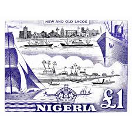 |
| Happy 64th Independence Day Anniversary Celebrations to my dear #Nigeria 🇳🇬 As we celebrate this anniversary, we must look back at where we coming from, to do a realistic #appraisal of where | ||
| FROM THE ARCHIVES: The 1990 Gideon Orkar coup attempt #FromTheArchives | ||
| postagestampart.com | 8X10NIGERIA3_grande.jpeg?v=1443036185 | 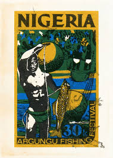 |
| Critique of muslim-christian relations story | ||
| X | Chris Ihuoma (@ihuoma_chris) / Posts / X | |
| Northwestern University | Exhibit Materials: Books | Militant Islam in Africa | 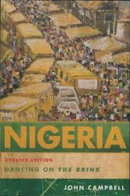 |
| Khalifa New Productions | ||
| Nomad4Now | Nigeria Magazine | Nomad4Now | 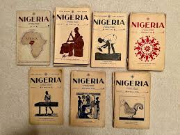 |
| Academia.edu | Lagos State University of Education | Music - Academia.edu | 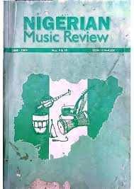 |
| Medium | CMA Thinker | 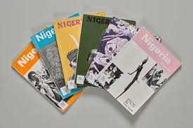 |
| we are a people who have learned to smile through storms, to dance in the dust of broken promises, to build dreams from the ruins of what should have been. our pain | ||
| The Nation Newspaper | Panorama - The Nation Newspaper | 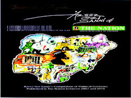 |
| Discogs | Ado Club Of Nigeria – Ado Club Adwolugo/Onye Nadiria – Vinyl (LP, Album), 1986 [r22261357] | Discogs | 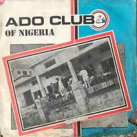 |
| Etsy | African Art, Nigerian Art, African Man Wall Art, Black Man Print, African American Art, Black Art, Afro Centric, Ethnic Art, Fishing Art - Etsy | 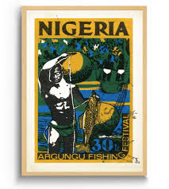 |
| Discogs | Nigeria 70 (Lagos Jump: Original Heavyweight Afrobeat, Highlife & Afro-Funk) – CD (Compilation, Promo), 2008 [r1397235] | Discogs | |
| Avion Thematics | Avion Thematics Stamps | Search for stamps on original+artist | 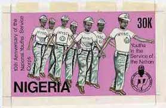 |
| Freudian Tones Olusegun Adejumo Old Brompton Gallery Kensington, London #art #artist #painting #live #travel #explore #life #freudiantones #coffee #gallery #exhibitions #lifestyle #london🇬🇧 | JADÉ ART | Facebook | 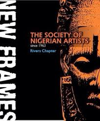 | |
| Meaning of 'k' on old postage stamps explained | 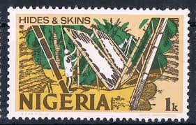 | |
| Academia.edu | PDF) The Tiv Warrior Tradition: Historical Perspective | 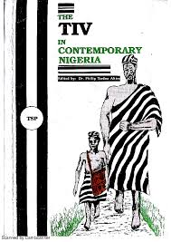 |
| X | Chagri Poyraz (@c2p6) / Posts / X |